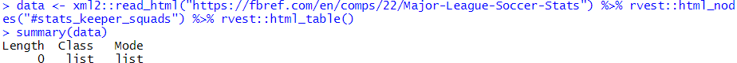
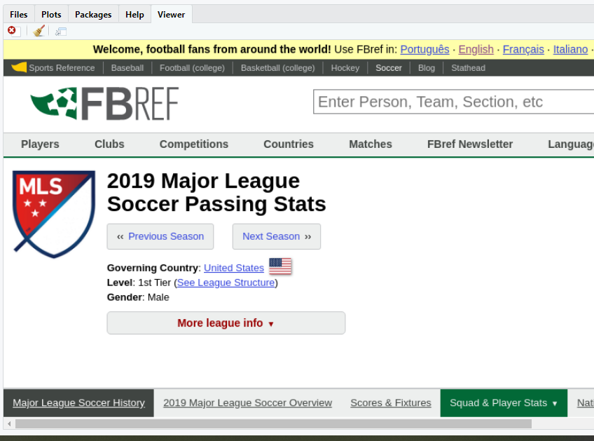
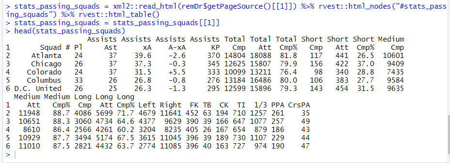
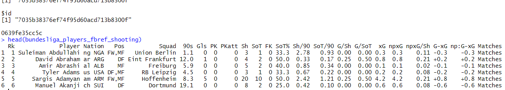

What we normally used to do ?
The traditional data scraping through rvest() is as follows:
require("dplyr")
stats_passing_squads = xml2::read_html("https://fbref.com/en/comps/22/passing/Major-League-Soccer-Stats") %>% rvest::html_nodes("#stats_passing_squads") %>% rvest::html_table()
stats_passing_squads = stats_passing_squads[[1]]
stats_passing_squads = xml2::read_html("https://fbref.com/en/comps/22/passing/Major-League-Soccer-Stats") %>% rvest::html_nodes("#stats_passing_squads") %>% rvest::html_table()
stats_passing_squads = stats_passing_squads[[1]]

Grab the table-id

And then (har)rvest it
What's special with FBref tables and Why just using rvest won't help?

- The site is structured in such a way that all tables except the first, are rendered dynamically. I managed to capture the loading status of tables.
- Notice how the 1st table loads quickly and how the reminder are taking their time to load.
- I have pasted the tableids on the tables for the sake of clarity.
So when we try to scrap such tables, this happens :
What Next? :(
The issue is we can see the tables and their ids in naked eye but can't put it on paper use them in R Studio. So we are going to use RSelenium which helps us in this matter.
- Selenium is an automation tool. RSelenium is a package which helps us to achieve automation in R.
- By using RSelenium, we fool the website as if a browser has walked through the website completely and collected every bit of info on its way. The server will think the selenium driver to be just another human wandering the page.
- In other words, it's similar to copying the contents of whole page and saving it in a word document for future purposes. Get it right? It's as simple as this.
But Before getting started, there is a catch.
We can't just enter the url in a browser and ask "RSelenium" to do its job. We need to install Selenium in our computer, so that RSelenium can communicate with real Selenium. And for that we will use the concept of containers (Docker) rathering than using executables which are tiresome and has different procedure for different OSes.
Hold your breath. All these are great leaning curves and rather one-time investments.
Getting Started:
- Install Docker for Desktop
-
Install RSelenium in RStudio as follows:
install.packages("RSelenium")
-
Start
Docker for Desktopin your OS. (It really takes time to load. Watch Haaland's goals meanwhile.) -
Run the following code in RStudio's Terminal (not Console) as follows:
docker run -d -p 4445:4444 selenium/standalone-chromeThe de facto way of knowing the success status is by runningdocker pson which you will get the container id of selenium as output -
Remember the anonymous browser that I mentioned earlier? We are about to invoke him now:
remDr <- RSelenium::remoteDriver(remoteServerAddr = "localhost",port = 4445L,browserName = "chrome")
remDr$open()
remDr$navigate("https://fbref.com/en/comps/22/passing/Major-League-Soccer-Stats")
remDr$screenshot(display = TRUE) Magnifique !
-
The rest of the code involves rvest where we will be dumping the html source code into read_html()
require("dplyr")
stats_passing_squads = xml2::read_html(remDr$getPageSource()[[1]]) %>% rvest::html_nodes("#stats_passing_squads") %>% rvest::html_table()
stats_passing_squads = stats_passing_squads[[1]] Großartig !
You - "So Pranav. You are asking me to follow the above steps everytime?"
Me - " No not absolutely. Hence comes the most awaited part."
We can create a function to automate all these steps (including running Docker from Console). Here's how I do it.
All you have to do is start "Docker for Desktop". That's it.
Me - " No not absolutely. Hence comes the most awaited part."
We can create a function to automate all these steps (including running Docker from Console). Here's how I do it.
getFBrefStats = function(url,id){
require(RSelenium)
require(dplyr)
# To avoid starting docker in Terminal
system("docker run -d -p 4445:4444 selenium/standalone-chrome")
Sys.sleep(3)
remDr <- RSelenium::remoteDriver(remoteServerAddr = "localhost", port = 4445L, browserName = "chrome") # Automating the scraping initiation considering that Page navigation might crash sometimes in
# R Selenuium and we have to start the process again. Good to see that this while() logic
# works perfectly
while (TRUE) {
tryCatch({
#Entering our URL gets the browser to navigate to the page
remDr$open()
remDr$navigate(as.character(url))
}, error = function(e) {
remDr$close()
Sys.sleep(2)
print("slept 2 seconds")
next
}, finally = {
#remDr$screenshot(display = TRUE) #This will take a screenshot and display it in the RStudio viewer
break
})
}
# Scraping required stats
data <- xml2::read_html(remDr$getPageSource()[[1]]) %>%
rvest::html_nodes(id) %>%
rvest::html_table()
data = data[[1]]
remDr$close()
remove(remDr)
# Automating the following steps:
# 1. run "docker ps" in Terminal and get the container ID from the output
# 2. now run "docker stop container_id" e.g. docker stop f59930f56e38
t = system("docker ps",intern=TRUE)
system(paste("docker stop ",as.character(strsplit(t[2],split = " ")[[1]][1]),sep=""))
return(data)
}
Test Drive: require(dplyr)
# To avoid starting docker in Terminal
system("docker run -d -p 4445:4444 selenium/standalone-chrome")
Sys.sleep(3)
remDr <- RSelenium::remoteDriver(remoteServerAddr = "localhost", port = 4445L, browserName = "chrome") # Automating the scraping initiation considering that Page navigation might crash sometimes in
# R Selenuium and we have to start the process again. Good to see that this while() logic
# works perfectly
while (TRUE) {
tryCatch({
#Entering our URL gets the browser to navigate to the page
remDr$open()
remDr$navigate(as.character(url))
}, error = function(e) {
remDr$close()
Sys.sleep(2)
print("slept 2 seconds")
next
}, finally = {
#remDr$screenshot(display = TRUE) #This will take a screenshot and display it in the RStudio viewer
break
})
}
# Scraping required stats
data <- xml2::read_html(remDr$getPageSource()[[1]]) %>%
rvest::html_nodes(id) %>%
rvest::html_table()
data = data[[1]]
remDr$close()
remove(remDr)
# Automating the following steps:
# 1. run "docker ps" in Terminal and get the container ID from the output
# 2. now run "docker stop container_id" e.g. docker stop f59930f56e38
t = system("docker ps",intern=TRUE)
system(paste("docker stop ",as.character(strsplit(t[2],split = " ")[[1]][1]),sep=""))
return(data)
}
All you have to do is start "Docker for Desktop". That's it.
bundesliga_players_fbref_shooting = getFBrefStats("https://fbref.com/en/comps/20/shooting/Bundesliga-Stats","#stats_shooting")
head(bundesliga_players_fbref_shooting)

head(bundesliga_players_fbref_shooting)